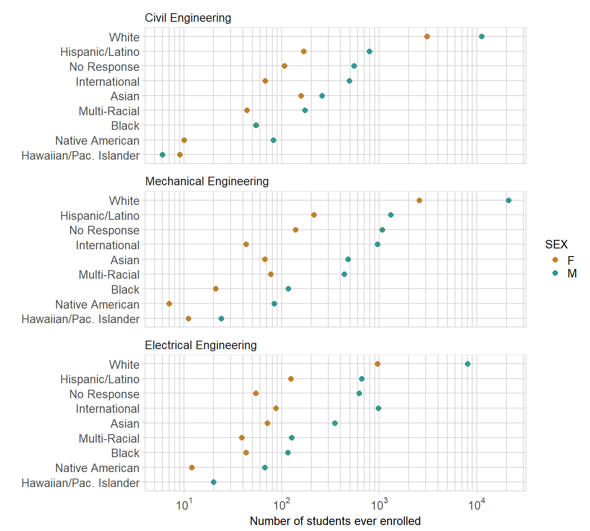

“Stickiness” is a longitudinal persistence metric that tracks all students who contact an instructional program to determine what percentage “stick” to that program and graduate in it. Stickiness is defined as the ratio of the number of students graduating in a program to the number of students ever enrolled in the program.1
In this article, we show you how to use midfieldr functions to compute program stickiness. Our workflow is:
Because our research focuses on intersectionality, we typically disaggregate the data by program, sex, and race/ethnicity.2 You may of course choose your own combination of variables to study.
For this example, we compare the stickiness of three engineering programs: Civil, Electrical, and Mechanical. Their 4-digit CIP codes were found by keyword search as illustrated in Selecting CIP codes.
We use:
cip_filter() to obtain the relevant program codes.add_column() (a tibble function) to add the PGRM variable to the data frame: a custom program label we use later for grouping, counting, and graphing.# obtain 2, 4, and 6-digit CIP codes and names
library(dplyr)
library(tibble)
library(midfieldr)
cve <- cip_filter("^1408") %>% add_column(PGRM = "Civil Engineering")
ele <- cip_filter("^1410") %>% add_column(PGRM = "Electrical Engineering")
mce <- cip_filter("^1419") %>% add_column(PGRM = "Mechanical Engineering")Assigning a custom label to PGRM is useful when the set of CIP codes we plan to group and count do not already have a common CIP name. For example, there is no CIP name for the general group of programs we might call Humanities.
Selecting the values of PGRM is important when using collections not specifically identified as groups in the CIP dataset, e.g., Humanities, Physical Sciences, and the collections provided in the midfieldr named_series.
Next we bind the individual program data frames into one data frame. We use two dplyr functions:
bind_rows() to bind the programs into one data frame ()select() to keep two variables: CIP6 for finding the desired student records and PGRM for grouping.# bind the four programs
programs <- bind_rows(cve, ele, mce) %>%
select(CIP6, PGRM)Examine the result: there are 11 CIP codes for these three programs.
# examine the result
programs
#> CIP6 PGRM
#> 1 140801 Civil Engineering
#> 2 140802 Civil Engineering
#> 3 140803 Civil Engineering
#> 4 140804 Civil Engineering
#> 5 140805 Civil Engineering
#> 6 140899 Civil Engineering
#> 7 141001 Electrical Engineering
#> 8 141003 Electrical Engineering
#> 9 141004 Electrical Engineering
#> 10 141099 Electrical Engineering
#> 11 141901 Mechanical EngineeringA student contributes to a program’s “ever enrolled” total if the program’s CIP code appears in the student’s term data. A student is counted once per program.
To gather the students ever enrolled, we use:
term data for term-by-term program information.student data for student race/ethnicity and sex.gather_ever() to gather students ever enrolled in programs and to add their race/ethnicity and sex to the data frame.# gather students ever enrolled in the programs
library(midfieldstudent)
library(midfieldterm)
ever <- gather_ever(term, programs)To examine the result of the operation, use glimpse(), a tibble function.
# examine the result
glimpse(ever)
#> Observations: 58,306
#> Variables: 10
#> $ MID <dbl> 820102025, 820102025, 820102025, 820102025, 820102...
#> $ BEGINYEAR <dbl> NA, NA, NA, NA, NA, NA, NA, NA, NA, NA, NA, NA, NA...
#> $ TYEAR <dbl> 2004, 2003, 2004, 2004, 2005, 1990, 1991, 1991, 19...
#> $ TTERM <chr> "SP", "FA", "FA", "SM", "SP", "FA", "SP", "FA", "S...
#> $ INSTITUTION <chr> "Institution 1", "Institution 1", "Institution 1",...
#> $ TCIPN <chr> "TCIP", "TCIP", "TCIP", "TCIP", "TCIP", "TCIP", "T...
#> $ CIP6 <chr> "140801", "140801", "140801", "140801", "140801", ...
#> $ PGRM <chr> "Civil Engineering", "Civil Engineering", "Civil E...
#> $ ETHNIC <chr> "No Response", "No Response", "No Response", "No R...
#> $ SEX <chr> "M", "M", "M", "M", "M", "M", "M", "M", "M", "M", ...At this point, one decides how to group the the students for counting. In our example, we group by race/ethnicity, sex, and program. We use the following dplyr functions:
count() to group and count the students by program, ethnicity/race, and sex. The count is assigned to the default variable n.rename() to rename n to EVER for the number of students in this group ever enrolled in the program.arrange() to arrange the rows of the resulting data frame in order of descending magnitude of the count.# count ever enrolled by grouping variables
ever_count <- count(ever, PGRM, ETHNIC, SEX) %>%
rename(EVER = n) %>%
arrange(desc(EVER))
# examine the result
ever_count
#> # A tibble: 53 x 4
#> PGRM ETHNIC SEX EVER
#> <chr> <chr> <chr> <int>
#> 1 Mechanical Engineering White M 21092
#> 2 Civil Engineering White M 11146
#> 3 Electrical Engineering White M 8029
#> 4 Civil Engineering White F 3080
#> 5 Mechanical Engineering White F 2573
#> 6 Mechanical Engineering Hispanic/Latino M 1302
#> 7 Mechanical Engineering No Response M 1071
#> 8 Electrical Engineering International M 974
#> 9 Electrical Engineering White F 961
#> 10 Mechanical Engineering International M 953
#> # ... with 43 more rowsWe can examine our saummarized data using ggplot2.
# multiway graph of ever enrolled numbers
library(ggplot2)
f1 <- ggplot(ever_count, aes(x = EVER, y = reorder(ETHNIC, EVER, median), col = SEX)) +
geom_point(size = 2) +
facet_wrap(~ reorder(PGRM, -EVER, median), ncol = 1) +
labs(x = "Number of students ever enrolled", y = "") To format the graph, we use the following midfieldr graph functions:
expon_scale_x_log10() creates exponential powers-of-ten notation and logarithmic grid lines.midfield_theme(), the ggplot theme_minimal() with some revisions.rcb() yields a hexadecimal code for specific colors named in the midfieldr::rcb_colors dataset.# format with midfieldr graph functions
f1 <- f1 +
scale_color_manual(values = c(rcb("mid_Br"), rcb("mid_BG"))) +
expon_scale_x_log10() +
midfield_theme()
print(f1)
For the rationale underlying the design of this “multiway” graph, see our Multiway data and graphs discussion.
To gather the students graduating from a program, we use:
student dataset for student race/ethnicity and sex.degree dataset for the programs from which students graduate.midfieldr::gather_grad() to subset degree for those students graduating from programs and add variables ETHNIC and SEX.glimpse(degree)
#> Observations: 89,886
#> Variables: 14
#> $ MID <dbl> 822360267, 823989510, 824343129, 821924342, 821612...
#> $ GYEAR <dbl> 1992, 1993, 1993, 1993, 1993, 1993, 1993, 1993, 19...
#> $ DEGREE <chr> "BS", "BS", "BS", "BA", "BA", "BS", "BS", "BS", "B...
#> $ GDESC <chr> "Biological Science", "Business Administration", "...
#> $ GTERM <chr> "SP", "SP", "SP", "SM", "SM", "FA", "SP", "SP", "S...
#> $ INSTITUTION <chr> "Institution 1", "Institution 1", "Institution 1",...
#> $ GCIP <chr> "260101", "520201", "520201", "450201", "450601", ...
#> $ GCODE <chr> NA, NA, NA, NA, NA, NA, NA, NA, NA, NA, NA, NA, NA...
#> $ GCIP2 <chr> NA, NA, NA, NA, NA, NA, NA, NA, NA, NA, NA, NA, NA...
#> $ GDESC2 <chr> NA, NA, NA, NA, NA, NA, NA, NA, NA, NA, NA, NA, NA...
#> $ GCODE2 <chr> NA, NA, NA, NA, NA, NA, NA, NA, NA, NA, NA, NA, NA...
#> $ GCIP3 <chr> NA, NA, NA, NA, NA, NA, NA, NA, NA, NA, NA, NA, NA...
#> $ GDESC3 <chr> NA, NA, NA, NA, NA, NA, NA, NA, NA, NA, NA, NA, NA...
#> $ GCODE3 <chr> NA, NA, NA, NA, NA, NA, NA, NA, NA, NA, NA, NA, NA...
sort(unique(degree$GCIP))
#> [1] "010101" "010102" "010103" "010104" "010304" "010307" "010507"
#> [8] "010601" "010605" "010801" "010802" "010901" "011001" "011101"
#> [15] "011103" "011106" "011201" "020101" "020201" "020299" "020301"
#> [22] "020402" "020403" "020409" "029999" "030101" "030201" "030204"
#> [29] "030205" "030301" "030501" "030502" "030601" "040601" "050299"
#> [36] "059999" "090101" "090102" "090401" "090499" "110101" "110401"
#> [43] "131202" "131203" "131210" "131301" "131309" "131316" "131319"
#> [50] "140101" "140301" "140501" "140701" "140801" "140901" "141001"
#> [57] "141201" "141301" "141401" "141901" "143501" "150603" "150612"
#> [64] "151001" "151202" "160000" "160101" "160302" "160501" "160901"
#> [71] "160905" "190101" "190202" "190402" "190503" "190504" "190701"
#> [78] "190901" "190905" "230101" "231001" "231303" "240101" "240103"
#> [85] "260001" "260101" "260102" "260202" "260210" "260301" "260501"
#> [92] "260502" "260701" "260708" "260709" "261201" "261301" "261305"
#> [99] "270101" "270301" "270399" "270501" "301801" "301901" "302001"
#> [106] "310101" "310301" "310505" "380101" "380201" "400101" "400501"
#> [113] "400601" "400703" "400801" "420101" "430202" "440701" "450101"
#> [120] "450201" "450401" "450601" "450801" "451001" "451101" "460401"
#> [127] "500101" "500102" "500301" "500408" "500501" "500701" "500702"
#> [134] "500901" "510101" "510201" "512202" "512305" "512306" "519999"
#> [141] "520101" "520201" "520301" "520901" "520902" "520905" "521101"
#> [148] "540101"
sort(unique(degree$GCIP2))
#> [1] "090102" "110101" "160302" "160501" "160901" "160905" "230101"
#> [8] "231303" "260101" "260202" "270101" "380101" "380201" "400801"
#> [15] "420101" "440701" "450401" "450601" "451001" "451101" "500501"
#> [22] "500702" "500901" "520201" "520301" "521101" "540101"
sort(unique(degree$GCIP3))
#> [1] "380101"library(stringr)
# draft of gather_grad()
gather_grad <- function(degree, programs) {
# select only those variables likely to be used for grouping
grad <- degree %>%
dplyr::select(MID, GYEAR, GTERM, INSTITUTION, GCIP, GCIP2, GCIP3)
# keep the earliest term in which a student earns a degree
grad <- grad %>%
arrange(MID, GYEAR, GTERM) %>%
group_by(MID) %>%
filter(row_number(MID) == 1) %>%
ungroup()
# gather all 6-digit codes (GCIP, GCIP2, GCIP3) for multiple degrees
# omit rows with no second or third degree
grad <- grad %>%
tidyr::gather(GCIPN, CIP6, GCIP:GCIP3) %>%
filter(!is.na(GCIPN))
# collapse the programs CIP6 vector to a search string
# then filter grad for the desired programs
series <- stringr::str_c(programs$CIP6, collapse = "|")
grad <- grad %>%
dplyr::filter(str_detect(CIP6, series)) %>%
unique()
# Join the program labels to grad
grad <- left_join(grad, programs, by = "CIP6") %>%
dplyr::arrange(CIP6)
# Join the sex and ethnicity/race demographics from student
grad <- join_demographics(grad)
return(grad)
}grad <- gather_grad(degree, programs)
glimpse(grad)
#> Observations: 4,268
#> Variables: 9
#> $ MID <dbl> 820102025, 820103243, 820109151, 820114345, 820117...
#> $ GYEAR <dbl> 2005, 1995, 2000, 1999, 2009, 2003, 2005, 1997, 20...
#> $ GTERM <chr> "SP", "SP", "FA", "SP", "SM", "SP", "SP", "SP", "S...
#> $ INSTITUTION <chr> "Institution 1", "Institution 1", "Institution 1",...
#> $ GCIPN <chr> "GCIP", "GCIP", "GCIP", "GCIP", "GCIP", "GCIP", "G...
#> $ CIP6 <chr> "140801", "140801", "140801", "140801", "140801", ...
#> $ PGRM <chr> "Civil Engineering", "Civil Engineering", "Civil E...
#> $ ETHNIC <chr> "No Response", "White", "White", "White", "White",...
#> $ SEX <chr> "M", "M", "M", "M", "M", "M", "F", "M", "F", "M", ...library(tidyr)
# count graduates by grouping variables
grad_count <- count(grad, PGRM, ETHNIC, SEX) %>%
rename(GRAD = n) %>%
arrange(desc(GRAD))
# examine the result
grad_count
#> # A tibble: 50 x 4
#> PGRM ETHNIC SEX GRAD
#> <chr> <chr> <chr> <int>
#> 1 Mechanical Engineering White M 1455
#> 2 Civil Engineering White M 1013
#> 3 Electrical Engineering White M 558
#> 4 Civil Engineering White F 258
#> 5 Mechanical Engineering White F 161
#> 6 Mechanical Engineering Hispanic/Latino M 79
#> 7 Electrical Engineering White F 74
#> 8 Electrical Engineering International M 65
#> 9 Mechanical Engineering No Response M 65
#> 10 Civil Engineering Hispanic/Latino M 54
#> # ... with 40 more rows
# join ever and grad
stickiness <- left_join(ever_count, grad_count, by = c("PGRM", "ETHNIC", "SEX"))
# if GRAD is NA, due to join with EVER. Is correctly set to zero
stickiness <- stickiness %>%
replace_na(list(GRAD = 0))
# compute stickiness
stickiness <- stickiness %>%
mutate(STICK = round(GRAD / EVER, 2))
kable(stickiness)| PGRM | ETHNIC | SEX | EVER | GRAD | STICK |
|---|---|---|---|---|---|
| Mechanical Engineering | White | M | 21092 | 1455 | 0.07 |
| Civil Engineering | White | M | 11146 | 1013 | 0.09 |
| Electrical Engineering | White | M | 8029 | 558 | 0.07 |
| Civil Engineering | White | F | 3080 | 258 | 0.08 |
| Mechanical Engineering | White | F | 2573 | 161 | 0.06 |
| Mechanical Engineering | Hispanic/Latino | M | 1302 | 79 | 0.06 |
| Mechanical Engineering | No Response | M | 1071 | 65 | 0.06 |
| Electrical Engineering | International | M | 974 | 65 | 0.07 |
| Electrical Engineering | White | F | 961 | 74 | 0.08 |
| Mechanical Engineering | International | M | 953 | 51 | 0.05 |
| Civil Engineering | Hispanic/Latino | M | 791 | 54 | 0.07 |
| Electrical Engineering | Hispanic/Latino | M | 662 | 36 | 0.05 |
| Electrical Engineering | No Response | M | 618 | 37 | 0.06 |
| Civil Engineering | No Response | M | 550 | 49 | 0.09 |
| Civil Engineering | International | M | 493 | 35 | 0.07 |
| Mechanical Engineering | Asian | M | 477 | 33 | 0.07 |
| Mechanical Engineering | Multi-Racial | M | 435 | 25 | 0.06 |
| Electrical Engineering | Asian | M | 348 | 25 | 0.07 |
| Civil Engineering | Asian | M | 258 | 25 | 0.10 |
| Mechanical Engineering | Hispanic/Latino | F | 213 | 11 | 0.05 |
| Civil Engineering | Multi-Racial | M | 172 | 16 | 0.09 |
| Civil Engineering | Hispanic/Latino | F | 167 | 15 | 0.09 |
| Civil Engineering | Asian | F | 158 | 14 | 0.09 |
| Mechanical Engineering | No Response | F | 139 | 7 | 0.05 |
| Electrical Engineering | Multi-Racial | M | 126 | 9 | 0.07 |
| Electrical Engineering | Hispanic/Latino | F | 124 | 11 | 0.09 |
| Mechanical Engineering | Black | M | 117 | 4 | 0.03 |
| Electrical Engineering | Black | M | 115 | 6 | 0.05 |
| Civil Engineering | No Response | F | 107 | 13 | 0.12 |
| Electrical Engineering | International | F | 87 | 5 | 0.06 |
| Mechanical Engineering | Native American | M | 84 | 5 | 0.06 |
| Civil Engineering | Native American | M | 82 | 9 | 0.11 |
| Mechanical Engineering | Multi-Racial | F | 77 | 5 | 0.06 |
| Electrical Engineering | Asian | F | 71 | 4 | 0.06 |
| Civil Engineering | International | F | 68 | 3 | 0.04 |
| Electrical Engineering | Native American | M | 67 | 5 | 0.07 |
| Mechanical Engineering | Asian | F | 67 | 5 | 0.07 |
| Civil Engineering | Black | F | 55 | 3 | 0.05 |
| Civil Engineering | Black | M | 54 | 3 | 0.06 |
| Electrical Engineering | No Response | F | 54 | 4 | 0.07 |
| Civil Engineering | Multi-Racial | F | 44 | 2 | 0.05 |
| Electrical Engineering | Black | F | 43 | 1 | 0.02 |
| Mechanical Engineering | International | F | 43 | 2 | 0.05 |
| Electrical Engineering | Multi-Racial | F | 39 | 0 | 0.00 |
| Mechanical Engineering | Hawaiian/Pac. Islander | M | 24 | 2 | 0.08 |
| Mechanical Engineering | Black | F | 21 | 1 | 0.05 |
| Electrical Engineering | Hawaiian/Pac. Islander | M | 20 | 1 | 0.05 |
| Electrical Engineering | Native American | F | 12 | 1 | 0.08 |
| Mechanical Engineering | Hawaiian/Pac. Islander | F | 11 | 1 | 0.09 |
| Civil Engineering | Native American | F | 10 | 1 | 0.10 |
| Civil Engineering | Hawaiian/Pac. Islander | F | 9 | 0 | 0.00 |
| Mechanical Engineering | Native American | F | 7 | 0 | 0.00 |
| Civil Engineering | Hawaiian/Pac. Islander | M | 6 | 1 | 0.17 |
# select only those variables likely to be used for grouping
grad <- degree %>%
dplyr::select(MID, GYEAR, GTERM, INSTITUTION, GCIP, GCIP2, GCIP3)
unique(grad$GCIP2)
#> [1] NA "450601" "160302" "230101" "380201" "451101" "231303"
#> [8] "420101" "090102" "450401" "160905" "540101" "500702" "160501"
#> [15] "400801" "521101" "451001" "500901" "520201" "270101" "500501"
#> [22] "260101" "110101" "440701" "160901" "260202" "520301" "380101"
unique(grad$GCIP3)
#> [1] NA "380101"# keep the earliest term in which a student earns a degree
one_degree <- grad %>%
filter(is.na(GCIP2) & is.na(GCIP3)) %>%
arrange(MID, GYEAR, GTERM) %>%
unique() %>%
group_by(MID) %>%
filter(row_number(MID) == 1) %>%
ungroup()
glimpse(one_degree)
#> Observations: 88,210
#> Variables: 7
#> $ MID <dbl> 1005272, 1031789, 1033889, 1034676, 1035264, 10358...
#> $ GYEAR <dbl> 2007, 2006, 2008, 2006, 2006, 2009, 2008, 2007, 20...
#> $ GTERM <chr> "SU", "SP", "SP", "SP", "FA", "FA", "SP", "SP", "S...
#> $ INSTITUTION <chr> "Institution 2", "Institution 2", "Institution 2",...
#> $ GCIP <chr> "090102", "520201", "521101", "270101", "451001", ...
#> $ GCIP2 <chr> NA, NA, NA, NA, NA, NA, NA, NA, NA, NA, NA, NA, NA...
#> $ GCIP3 <chr> NA, NA, NA, NA, NA, NA, NA, NA, NA, NA, NA, NA, NA...
unique(one_degree$GCIP2)
#> [1] NA
unique(one_degree$GCIP3)
#> [1] NAGather the GCIPs into a single column
one_degree <- one_degree %>%
gather(GCIPN, CIP6, GCIP:GCIP3) %>%
filter(!is.na(CIP6))
glimpse(one_degree)
#> Observations: 88,210
#> Variables: 6
#> $ MID <dbl> 1005272, 1031789, 1033889, 1034676, 1035264, 10358...
#> $ GYEAR <dbl> 2007, 2006, 2008, 2006, 2006, 2009, 2008, 2007, 20...
#> $ GTERM <chr> "SU", "SP", "SP", "SP", "FA", "FA", "SP", "SP", "S...
#> $ INSTITUTION <chr> "Institution 2", "Institution 2", "Institution 2",...
#> $ GCIPN <chr> "GCIP", "GCIP", "GCIP", "GCIP", "GCIP", "GCIP", "G...
#> $ CIP6 <chr> "090102", "520201", "521101", "270101", "451001", ...Now count
Matthew Ohland, Marisa Orr, Richard Layton, Susan Lord and Russell Long (2012) Introducing “stickiness” as a versatile metric of engineering persistence, in proc. 2012 Frontiers in Education Conference, Seattle, WA, pp. 1–5. DOI 10.1109/FIE.2012.6462214.↩
The possible values of race/ethnicity and sex categories are limited to those used by the participating US institutions. Thus sex is limited to the set (F, M) and race/ethnicity is limited to the set (Asian, Black, Hawaiian/Pac. Islander, Hispanic/Latino, International, Multi-Racial, Native American, No Response, White).↩